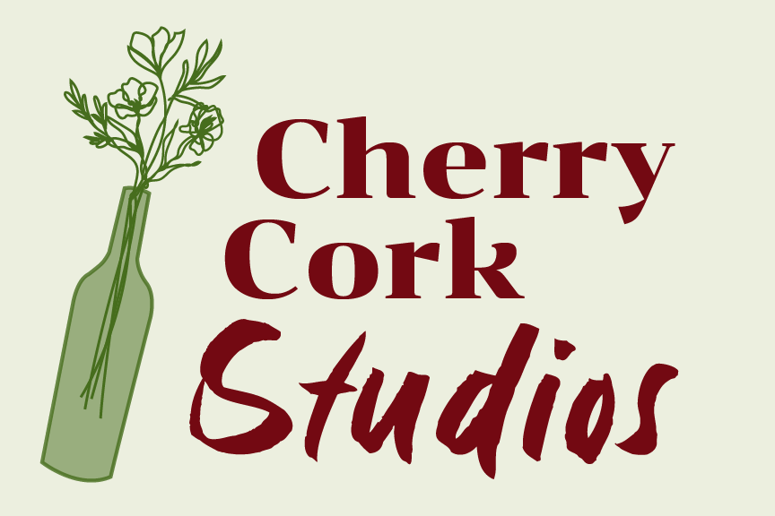

Abigail Ratley

My name is Abigail Ratley and I am a student at Nottingham Trent University,
currently in my 3rd year of studying Media Production and am predicted a 1st.
I did a semester abroad last year with the International Exchange Scheme where I was a Digital Media Art's major,
graduating with a 4.0 gpa. With the combination of these two degrees I have studied modules regarding: Creative Cloud
(Photoshop, Premier Pro, After Effects, Audition, XD); HTML and p5.js; filming with professional camera equipment;
graphic design and branding; and producing/ management.
Throughout my degree I have gained experience in working both
independently and in groups to deliver high-quality content under tight deadlines. I am eager to apply my creativity,
organisation, and technical skills to a professional setting where I can continue to grow and contribute effectively.
My biggest interest is website design and development. I created this website from scratch using html and css.
I am alos currently working on a brand design project with website development features, partnering with Cherry Cork Studios.
This will be my first professional project doing website development for an external client. The compnay was a start up when
i approached them with little to no branding so i created colour schemes, typograpy pairs and logos prior to starting the website *see below*

 @rollthetapess
@rollthetapess
 @roll.the.tapes26
@roll.the.tapes26